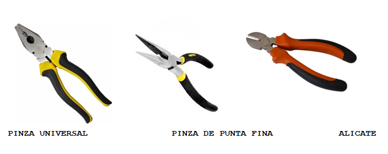
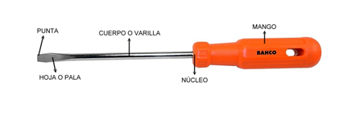
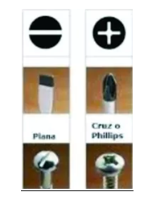
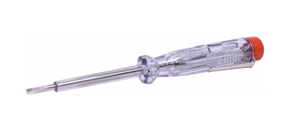

Las herramientas son instrumentos cuya misión es facilitarnos la realización de todo tipo de tareas, economizando nuestro esfuerzo y tiempo. Para los trabajos eléctricos las herramientas más básicas que se utilizan son las pinzas, los destornilladores y comprobadores de tensión, también llamados busca polos.
Sirven para sujetar, doblar piezas y cables, cortar alambres, etc. Existen de diferentes tipos, las más importantes son la pinza universal, la pinza de punta fina y la pinza de corte también llamada alicate.
Los destornilladores son herramientas que cuentan con una punta que tiene un perfil determinado que se introduce y ajusta en la cabeza del tornillo para realizar el apriete o aflojado (según el sentido de giro aplicado).
Se clasifican fundamentalmente por la configuración y el tamaño de la punta, que ha de adaptarse perfectamente a la forma de la cabeza del tornillo, de tal manera que hay un destornillador para cada forma. Los más importantes son los de punta plana y punta Phillips.
Es una herramienta que permite, por intermedio de una señal luminosa o acústica, verificar la presencia de energía eléctrica en un punto particular. Pueden trabajar mediante contacto o sin contacto.
Para que sigan prestando un buen servicio con el transcurrir de los años, es necesario prestarle atención a que su manipulación y mantenimiento sean adecuados.